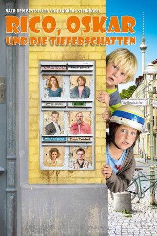
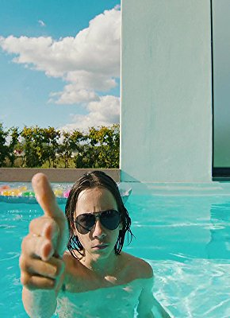

#846 Rico, Oskar und die Tieferschatten
 
 IMDB-Wertung: 7.0 / 10
IMDB-Wertung: 7.0 / 10  Metascore: 0
Metascore: 0 
Rico ist ein wenig begabter, zehnjähriger Junge aus Berlin, der bei seiner alleinerziehenden Mutter wohnt. Er freundet sich mit dem hochbegabten, zwei Jahre jüngeren Oskar an - und gemeinsam verbringen sie fortan ihre Freizeit damit, auf Verbrecherjagd zu gehen. Besonders abgesehen haben sie es dabei auf den berüchtigten Entführer "Mister 2000". Doch eines Tages erscheint Oskar nicht am verabredeten Treffpunkt. Also fragt Rico sich, ob Mister 2000 herausgefunden hat, dass die Jungs ihn suchen. Wenn ja, dann könnte Oskar in ernsthafter Gefahr sein! Rico muss allen Mut zusammenkratzen und alle Kräfte mobilisieren, um Mister 2000 zu finden, vor allem aber seinen verschollenen Freund.
Jahr: 2014
Dauer: 97 Minuten
FSK: 0
Land: Deutschland Studio: 20th Century Fox of GermanyTonspuren:
Untertitel:
Auflösung: 1080p (1920x800) Größe: 4444 MB
Genre: Abenteuer, Komödie, Krimi, Familie
Regisseur: Neele Leana Vollmar
Drehbuch: Christian Lerch, Andreas Bradler, Klaus Döring, Andreas Steinhöfel
Soundtrack: Oliver Thiede
Darsteller:
 Karoline Herfurth als Tanja Doretti
Karoline Herfurth als Tanja Doretti Ronald Zehrfeld als Simon Westbühl
Ronald Zehrfeld als Simon Westbühl- Ursela Monn als Frau Dahling
 David Kross als Rainer Kiesling
David Kross als Rainer Kiesling Anke Engelke als Eisverkäuferin
Anke Engelke als Eisverkäuferin- Senta Dorothea Kirschner als Frau
- Anton Petzold als Rico Doretti
- Juri Winkler als Oskar
- Axel Prahl als Marrak
 Milan Peschel als Herr Fitzke
Milan Peschel als Herr Fitzke Katharina Thalbach als Ellie Wandbeck
Katharina Thalbach als Ellie Wandbeck- Cornelius Schwalm als Mann im Jogginganzug
- David Rott als Ulf Brauscher
- Can Mansuroglu als Reporter
- Lyonel Hollaender als Felix
-  Tristan Göbel als Sven
- Mina Rueffer als Sophia
- Inga Dietrich als Sophias Mutter
- Katharina Hauck als Frau Kessler
- Michael Sideris als Herr Kessler
- Charlotte Pasewald als Afra Kessler
- Emma Pasewald als Mele Kessler
- Benjamin Daniel als Jonathan Kessler
- Maxim Daniel als Ludwig Kessler
- Fritz Roth als Taxifahrer
 Gitta Schweighöfer als Polizistin
Gitta Schweighöfer als Polizistin- Hendrik Arnst als Polizist
- Andreas Schröders als Oskars Papa
- Babette Winter als Kassiererin
- Lilli Lou Mallmann als Mädchen in Eisdiele
- Paul Walther als Mann
- Bruno Baatz als Taxifahrer 2
- Elzemarieke de Vos als Vollbusige Frau
- Roswitha Müllejans als Alte Oma
- Heinz Meier als Alter Opa
- Tobias Haack als Double Rico Doretti
- Erol Totic als Double Oskar
Datei: X:\Kinder Collections\Rico, Oskar\Rico, Oskar und die Tieferschatten (2014, FSKo.Al., 1920x800).mkv seit 31.03.2015
Festplatte: Kinder-Filme+Trick
 Alle Filme aus Gruppe 'Kinder Collections\Rico, Oskar'
Alle Filme aus Gruppe 'Kinder Collections\Rico, Oskar'